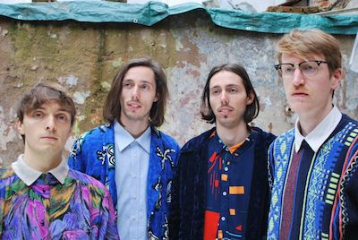

Saturday 03 April 2021
-
13:00 - 13:45Clari Sport-Warm Up (via Zoom)
-
13:45 - 14:00Highlights 2020
-
14:00 - 14:15OPENINGCologne / DE
-
14:15 - 14:30LenaDortmund / DE
-
14:30 - 14:45Half of AmicellisBerlin / DE
-
14:45 - 15:00Kultursofa "Culture, Classic & Corona": Talk mit Maike Fiedler & Sören SchilppSchwerin / DE
-
15:00 - 15:20Ijaz AliBonn / DE

Ijaz Ali ist ein Singer/Songwriter aus Bonn. Seit Mitte 2012 ist er mit seiner Gitarre als Solokünstler unterwegs, davor spielte er in diversen Bands. Die aus diesen Bands hervorgehende Pop/Rock-Attitüde fließt immer noch stark in seine Musik ein, denn seine Songs sind alles andere als reine Zupf- oder Kuschelballaden! Mit sowohl schnellen und eingängigen Rhythmen und Melodien, als auch mit ruhigen und tragenden Stücken verspricht ein Konzert von ihm ein abwechslungsreiches Programm.
-
15:30 - 15:45TessellateAachen / DE
Ob man Tessellate nun als neue Band bezeichnen darf, lässt sich wohl nicht gänzlich klären. Gegründet 2013 als Schülerband, tourten die 4 Musiker damals noch mit erweiterter Besetzung über die Dorffeste und durch die Jugendheimkeller der Provinz. 2020 wurde dann entschieden, dass mit dem alten Image, dem alten Namen und den alten Coversongs Schluss sein muss und Tessellate wurde gegründet. Die kurze Zeit, die man ab dann im neuen Proberaum verbringen konnte, nutzte man, um das scheinbar endlose Songrepertoire des Sängers Florian Achten endlich umzusetzen. Die Mischung aus Einflüssen wie Muse und Biffy Clyro, aber auch dem rohen Charakter, der über Jahre aus den Proberaumkellern der dörflichen Tristesse aufgesaugt wurde, wurde dann Anfang Oktober in Rekordzeit im Studio festgehalten. Die dort entstandenen Lieder und die Band dahinter warten nur darauf, auf die Bühnen des Landes gebracht zu werden.
-
15:45 - 16:00Aline & ZimboBerlin / DE
-
16:00 - 16:15AboudHebron / Palestine
Aboud Qawasmeh is a 33 year old professional musician and music teacher from Hebron, Palestine. He plays various instruments and specialised on the Oud (oriental guitar), Darbuka (and other percussions) and Qanun. After having engaged in various intercultural music projects in and outside of Palestine, he is currently fulfilling his dream by establishing the very first music association based in Northern Hebron, "SOUL" Cultural Forum for Music & Arts. His vision centres around a safe space for marginalised children and youth in which they can explore music as a tool that offers hope, stability and psycho social support in times of uncertainty in the challenging realities of Palestine. In times of the current pandemic, creating bonds, seeking identity and preserving cultural heritage has become more important than ever.
-
16:15 - 16:45Mr. KohlrabimanCologne / DE

Mr. Kohlrabiman kommt aus Köln und ist ein Soloartist. Alle auf den Records hörbaren Instrumente werden von ihm selbst eingespielt, aufgenommen und gemixt. Einflüsse aus Funk, Soul, Pop und vor allem Hiphop definieren seinen eigenen Sound.
-
16:45 - 17:00MenthaBonn / DE
Mein Name ist Mentha, ich bin 23 Jahre alt und lebe in Bonn. Seit ich klein bin stehe ich im Kontakt mit der Musik da meine Mutter auch leidenschaftlich gerne singt und die Quartett Proben oft bei uns stattfanden. Somit gehörten zu meinen Schlafenliedern „Bohemian Rhapsody“ – Queen, „Engel“-Rammsein und im Hochsommer „Oh Tannenbaum“. Auch in meiner Schulzeit habe ich jede Chance genutzt mich bei musikalischen Auftritten zu beteiligen und auch jetzt vergeht nicht ein Tag ohne zu musizieren. Voller Tatendrang arbeite ich mit verschiedenen Leuten an eigenen Songs und hoffe bald ein paar davon präsentieren zu können.
-
17:00 - 17:15Andy UlmerBerlin / DE
-
17:15 - 17:30N.A.I.M.ABerlin / DE
No.Art.Is.Made.Alone. Singer and songwriter N.A.I.M.A. combines soulful vocals with jazzy piano lines and hip hop driven beats and creates a dreamy kaleidoscope of sound.
-
17:30 - 17:45Ibrahim TchanParakou / Benin
.jpg)
Ibrahim Tchan wurde am 27. August 1985 im 3. Bezirk von Parakou, im Bezirk Banikanni, geboren. Aufgewachsen mit seinen Geschwistern zwischen einem polygamen Vater und einer Hausfrauenmutter, interessiert sich der junge Ibrahim schon sehr früh für Musik und insbesondere für die Gitarre in den Jahren 2000. Er besorgte sich eine behelfsmäßige Gitarre, an die er Fahrradkabelsaiten anbrachte, und übte nebenbei, um später seinen eigenen Musikstil zu entwickeln. Ibrahim Tchan ist heute ein Musiker und Sänger aus Benin. Seine Kompositionen sind geprägt von dem Wunsch, traditionelle beninische Musik und Blues zu verbinden. Auf mehreren nationalen und internationalen Bühnen präsent, war Ibrahim Tchan mit seinem Konzept des Diskussions- und Musikabends rund um die Restitution von afrikanischem Kulturgut auf Deutschlandtournee (Bonn und Hamburg). Er war auch beim 2. Weltforum der französischen Sprache in Belgien dabei und war Mitautor des berühmten Liedes "Créactivez-vous", das zur Hymne des Forums wurde und auf internationalen Kanälen (RTBF, TV5 Monde...) gesendet wurde.
-
17:45 - 18:00Reinis Jaunais & Erna DaugavieteRiga / Latvia
Reinis Jaunais, originally from Latvia, is an adventurer from head to toe. When he was 16 years old, he started to hitchhike around Europe, carrying only his guitar that he used to busk on streets, as well as a sleeping bag and a few pairs of socks. When he thought that he had been almost everywhere in Europe, he hitchhiked around Caucasus, Middle East, Western Sahara, Central Asia and Pamir mountains. Years later he started to organize international concert tours instead of hitchhiking trips and busking. For the last few years, Reinis has played over 200 concerts a year and has toured in most countries in Europe, as well as in Turkey, Australia and New Zealand. Cello player Erna Daugaviete is going to perform together with Reinis. Erna collaborates with many great musicians in Latvia. Recently they released their new album 'Zeme'. The album title “Zeme” translates as Earth; soil; land; ground; country and it manifests international solidarity. The album was recorded together with musicians from from various countries from all around the world, during the months when the global pandemic turned the world upside down. In this album Reinis and Erna delivers what they are best known for, their unique instrumental style, with the addition of some beautifully crafted lyrical pieces.
-
18:00 - 18:10Studio CologneCologne / DE
-
18:10 - 18:15Gigi Saggi Dance Band (Videopremiere)Bonn / DE
Abgespannt vom Status-Quo? Stretch dir die Faszien mit der faszinierenden Gigi Saggi Dance Band. Das partytaugliche Amphibienfahrzeug aus San Remo navigiert dich mit funky ease durch die schlammigen Gewässer des neoliberalen, prä-apokalytpischen Sumpfs direkt in eine lebenswerte Zukunft. Trilinguale Permakultur-Poesie gewürzt mit der Salzwasserfrische einer italienischen Küstenstadt. Am Ende jeder Performance wartet auf alle der feinkörnige Strand einer besseren Welt: Dance Music for Earthly Survival.
18:15 - 18:30Willie Ó hÍomhair & the Moonshine CrewIreland
A folk and traditional music trio, with a penchant for adventure and poetry, consisting of William Ó hÍomhair from Ireland, Kerri Joy Javorka from Montana, and Quentin Vestur from France, based in beautiful Western Brittany, France. Having met in Ireland in 2016 through shared passions, studies, and adventures across Ireland and Brittany, we have united our diverse backgrounds and projects at various stages to produce exciting and unique interpretations of music from across our traditions. Mainly drawing from the rich repertoires of music from Ireland & Scotland, along with a love for poetry and story, we are delighted to be able to share music that gives wings to the mind and flight to the imagination in these difficult times.
18:30 - 18:45AnneluCologne / DE„Annelu macht Indie-Pop, der nur so glitzert und glänzt.“ meint egoFM (15.11.2019) zum Sound der in Köln lebenden Künstlerin und das trifft es wohl ziemlich gut, paaren sich hier Indie-Gitarren mit dem elektronischen Glanz von 80s Synth-Pop Nummern und eingängigen Melodien. Die 27-jährige hat zur Arbeit an ihrem Debut-Album erstmal ihre Wohnung gekündigt und ist ins Tonstudio gezogen um so viel Zeit wie möglich mit ihrer Musik verbringen zu können. Die Songs beschäftigen sich mit der Zeit im Alter zwischen 20 und 30 und den damit einhergehenden Themen Zukunftsangst, Liebe, Freundschaft, Einsamkeit, die Suche nach Identität und einem Ort, den man zu Hause nennen kann. Neben Pop-Künstler*innen der 80s, sind es vor allem die britischen Bands The 1975, Pale Waves, sowie Fickle Friends die Annelu zu ihren Songs inspirieren. „(Annelu) klingt wie eine Pop-Queen, die genauso gut aus skandinavischen Ländern (...) kommen könnte.“, findet Radio Fritz (15.09.2019).
18:45 - 19:00EINSNEUNZIGMarburg / DE
EINSNEUNZIG heißt Feuer unterm Arsch. Ganz egal ob ihr tanzen könnt oder nicht, wir reißen mit euch die Bude ab. Funkig-Poppige Rhythmen treiben euch voran, verzerrte Gitarren und Stimmbänder fiebern gemeinsam mit euch im Chor!
19:00 - 19:15Still TalkCologne / DE
Die Zwanziger sind eine wilde Zeit und facettenreich. Wenn man also eine Platte über diese Jahre macht, ist es nicht verwunderlich, dass die einzelnen Songs so divers klingen wie die Zeit, die sie beschreiben. In der Debüt-EP von Still Talk sinniert die Songwriterin Tanja Kührer über ihre Zwanziger und nähert sich ihnen auf eine fast schmerzhaft ehrliche Weise. Über einige Jahre hinweg geschrieben, erzählen ihre Songs die Geschichten der Phasen ihres Lebens, in denen sie entstanden sind. Inspiriert von Bands wie Brand New, Jimmy Eat World, Boygenius und The Night Game, lebt die Musik von Still Talk von melancholischem Emo mit ein paar Pop-Einflüssen. Während Tanja selbst sagt, dass die EP "eine kurze Sammlung von Songs darüber ist, wie leicht ich mich ablenken lasse", ist es definitiv eine Sammlung von Songs über die Herausforderungen einer Twenty-Something Person, die versucht, mit dieser seltsamen Welt zurechtzukommen.
19:15 - 19:45Oranžās BrīvdienasRiga / Latvia19:45 - 20:00ReveriesCologne / DEVon der vertrauten Musikgarage in der Heimat, über Aufbruch und Veränderung, ist Reveries langer musikalischer Weggefährte des Singer/Songwriters Max Altmeyer. Reveries bildet für ihn Rückzugsort, wie auch die Freiheit Gefühle, Erfahrungen und Zweifel während des Erwachsenwerdens zu verarbeiten, die er mit einfachen Worten nicht erzählen könnte. Mit dem lange gehegten Traum seine Musik auch der Öffentlichkeit zu präsentieren entstand mit Michael Roehrig (Lead Git), Paul Uedingslohmann (Drums) und David Schweikart (Bass), im Herbst 2017 die Band Reveries. Die guten Resonanzen erster Konzerte in Köln, Hamburg, Münster, Maastricht und Landau bestätigten ihre neugefundene Formation. Um die rohe, markante Atmosphäre der bereits erschienenen Singles auch auf Platte zu bewahren, entschlossen sich die vier Jungs die Produktion ihrer Debut EP „Reveries" weiterhin komplett in eigene Hände zu nehmen und zusammen mit ihrem jahrelangen Freund und Mitproduzenten Adam Wojtowicz im kleinen Tonstudio im Zimmer von Max zu produzieren. Die EP erschien noch im Frühjahr 2019, einige Konzerte in ganz Deutschland folgten. Die am 14. August 2020 erschienene Single „Coral“ ist ein erster Vorbote für das bald erscheinende Debut-Album an dem Reveries aktuell arbeiten.
20:00 - 21:00AMSL & Anna CainelliCologne / DEAMSL & Anna Cainelli legen für uns auf und bringen die Sonne ins Pandamie Festival. Dabei mischt sich zwischen klassische Afro Beats, Afro House, Disco und Funk auch gerne der ein oder andere HipHop Track. Kommet und tanzet!
Support our project and artists on betterplace.mePrevious Festivals